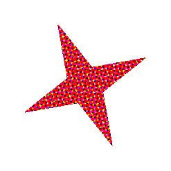
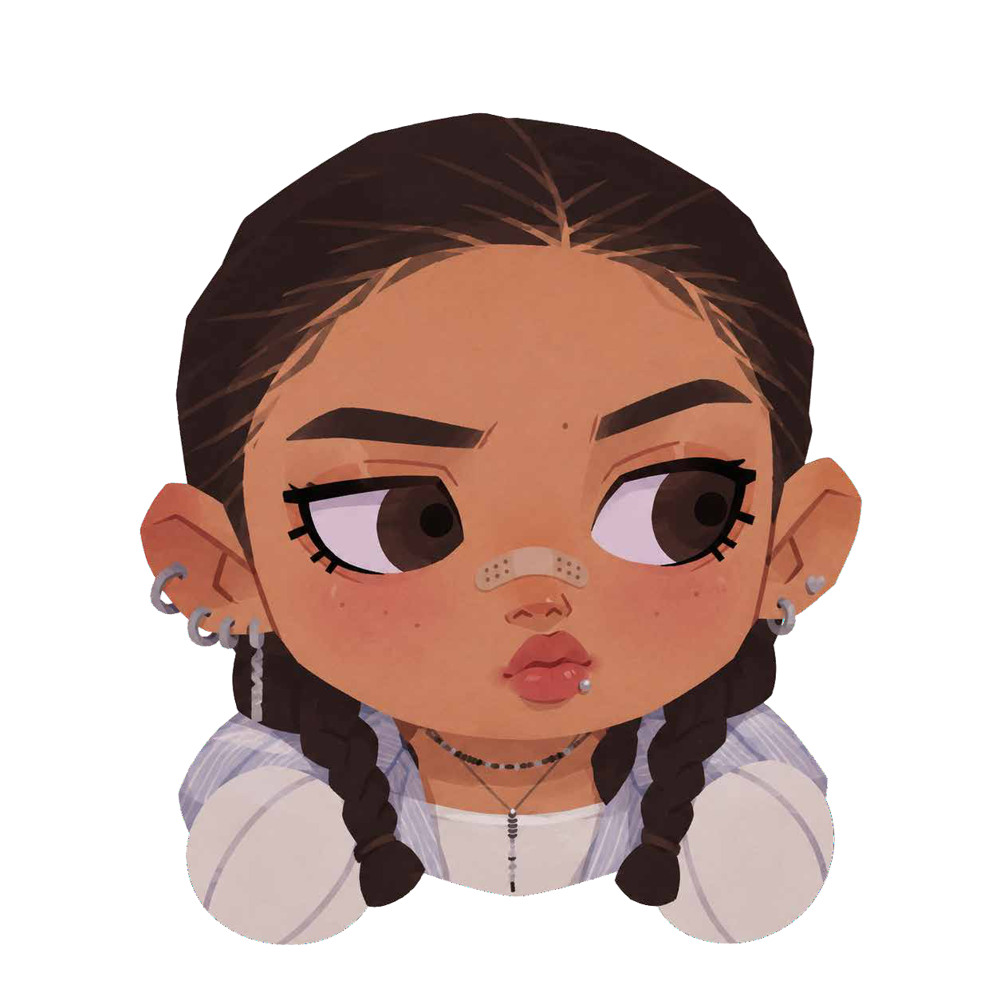
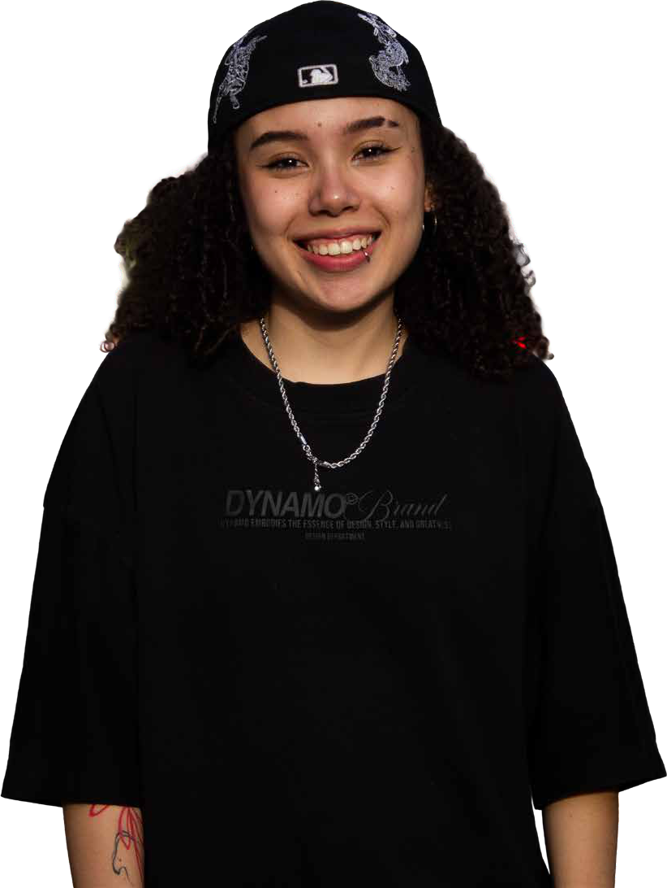

PORTA FOLIO
Diseño gráfico
Juliana Palacio · Ink District
Ilustración / Empaques
Fotografía / Audiovisual
Branding / Editorial
2026 //

Desliza
- Ps
- Ai
- Lr
- Pr
- Id
¡Hola! Soy Juliana Palacio
Acerca de mí
Soy una diseñadora proactiva, curiosa y empática que busca ir más allá de la primera idea. Con enfoque en ilustración, empaques, campañas y proyectos audiovisuales, combino estrategia y creatividad para construir experiencias memorables y conectar de forma real con el usuario.
Me destaco por mi liderazgo colaborativo y visión estratégica. Además, canalizo mi creatividad en la gastronomía como creadora de Borde, un proyecto de repostería.
Educación
- Universidad Católica Luis Amigó Profesional en Diseño Gráfico En curso
- Universidad EAN Diplomado en e-commerce 2026
- Liceo Francisco Restrepo Molina Bachiller 2021
Experiencia
- Freelancer de Diseño Gráfico Creadora de Borde · Libro para la Asociación María Santificadora · Logo para asesor de Sura · Marca de cosmético capilar · Social media
- Repostera
- Servicio al cliente
Español nativoInglés básico
DiseñoAudiovisualesCocinaMúsicaAnimalesCine
Contenido
2021 — 2026 //¿Tienes un proyecto en mente?